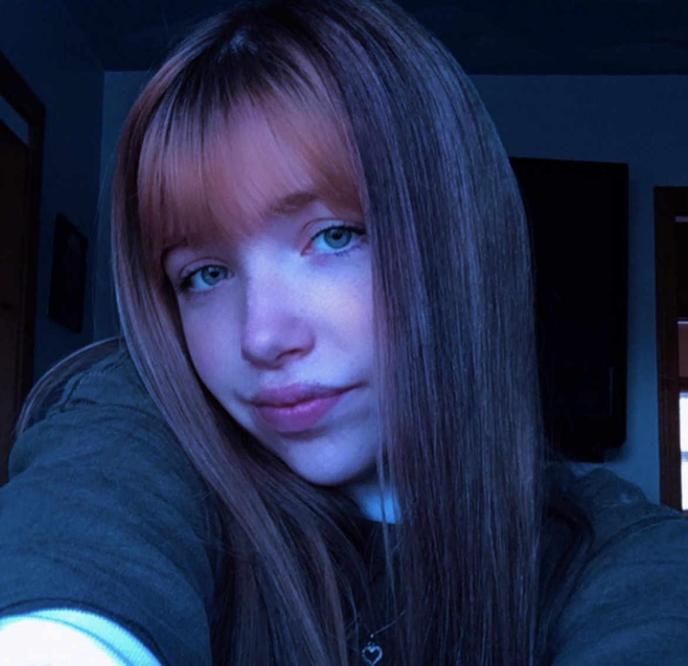

about
about

hello! as you have already heard, my name is jazmine manzella! it's nice to meet you. if you're interested in my life and knowing more about me, read on!
WHO AM I?
i've always loved film and the whole experience behind it, so I'm striving to become a visual effects artist for literally anything out there in this world.SCHOOL/EDUCATION
i first began making illustrations on my phone back in 2018, but i quickly moved to making small edits. in 2021 i began working with adobe after effects and taught myself everything i know currently. i decided to take my passion to college and now i'm almost done with my freshman year at Illinois State University. i'm still teaching myself more advanced visual effects on after effects.WHAT I DO
as I have stated, i'm working on becoming a visual effects artist or even a film editor. it has been my dream to be apart of the team that makes a fictional world come to life. i'm a hard worker and passionate about what i do. if you're interested in some things i've made, you can check out my instagram which is linked below.CURRENTLY WORKING ON...
learning visual effects tips and tricks and practicing on my own